How much money could you raise with a wealth tax? And how would it change inequality? This simulator can answer these questions. Unlike other existing tools, it considers how taxation dynamically affects wealth accumulation and, as a result, changes the distribution of wealth in the long run. This makes it possible to know how much revenue the tax would sustainably raise and how it would reshape the wealth distribution.
The analysis is based on the paper “Uncovering the Dynamics of the Wealth Distribution,” which develops simple formulas for understanding the long-run impact of wealth taxation.
Read the paper
Hi! My name is Thomas Blanchet, and this is my job market paper. I will be available for interviews at the 2023 ASSA and EEA meetings.
For the complete analytical details, you can read the paper this simulator is based on: “Uncovering the Dynamics of the Wealth Distribution” by Thomas Blanchet
We assume that people’s wealth \(w_{it}\) follows a continuous time drift-diffusion process characterized by:
\[\mathrm{d} w_{it} = \mu(w_{it})\,\mathrm{d}t + \sigma(w_{it})\,\mathrm{d}B_t\]
where the parameters \(\mu(w_{it})\) and \(\sigma(w_{it})\) are directly estimated so as to reproduce the trajectory of the wealth distribution since the 1980s.
Now, introduce a wealth tax \(\tau(w)\). Ignoring behavioral responses for the moment, the dynamic of wealth is now:
\[\mathrm{d} w_{it} = [\mu(w_{it}) - \tau(w_{it})]\,\mathrm{d}t + \sigma(w_{it})\,\mathrm{d}B_t\]
Blanchet (2022) shows that if the original steady-state distribution of wealth was \(f(w)\), then the steady-state distribution of wealth with the tax is:
\[g(w) \propto f(w)\exp\left\{-\int_{-\infty}^w \frac{2\tau(s)}{\sigma^2(s)}\,\mathrm{d}s\right\}\]
First, we assume that, in response to a marginal tax rate \(\tau'(w)\), people only report a fraction \(\alpha(w)=[1-\tau'(w)]^\varepsilon\) of their wealth.
Then, we assume that, in response to a tax with marginal rate \(\tau'(w)\) on wealth, people increase their consumption by a factor \(\gamma(w)=[1 - \tau'(w)]^{-\eta}\).
Finally, we allow for changes to the wealth mobility parameter \(\sigma(w_{it})\), which we rewrite \(\beta\sigma(w_{it})\) with \(\beta=1\) by default.
Behavioral responses take the form a change to the drift term, which is analogous to a change in the effective rate of the wealth tax. The formula for the mechanical effect of the wealth tax can therefore be directly extended to account for behavioral effects. It becomes:
\[g(w) \propto f(w)\exp\left\{-\int_{-\infty}^w \frac{2\tau(s)\alpha(s)}{\beta^2\sigma^2(s)}\,\mathrm{d} s -\int_{-\infty}^w \frac{2c(s)[1 - \gamma(s)]}{\beta^2\sigma^2(s)}\,\mathrm{d} s\right\}\]
where \(c(w)\) is an estimate of average consumption calibrated to match the evolution of wealth inequality since the 1980s.
This simulator uses the most recent estimate of the wealth distribution in the United States from Blanchet, Saez, and Zucman (2022) as the baseline long-run wealth distribution. This constitutes a reasonable approximation given that Blanchet (2022) finds that the current wealth distribution is close to its steady state. This data takes the form of simplified microdata. I use discretized versions of the formulas above and use them to reweight the microdata appropriately.
To construct the last graph (tax revenue as a function of the average marginal tax rate), we alter the tax schedule provided by the user as follows. For any bracket \(k\) with marginal rate \(\tau_k\), and for any average marginal tax rate \(\bar{\tau}\), we define \(\tau^*_k = \tau_k + \phi(\bar{\tau})\tau_k(1-\tau_k)\) where \(\phi(\bar{\tau})\) is chosen so that the average marginal tax rate of the tax schedule defined by the user’s thresholds and the marginal rates \((\tau_1, \dots, \tau_k)\) is equal to \(\bar{\tau}\).